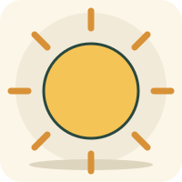
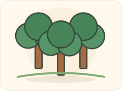

समान अर्थ वाले शब्द
Synonyms
Audio uses your device’s Hindi voice; availability varies. No native recordings included.आज का नियम
Understand the conceptपर्यायवाची शब्दों के अर्थ निकट होते हैं, लेकिन प्रयोग का स्तर या संदर्भ अलग हो सकता है।
शब्द और अर्थ
Vocabulary
जल
waterपानी
water
सूर्य
sunसूरज
sunमित्र
friendदोस्त
friend
वन
forestजंगल
forestवाक्य प्रयोगशाला
Sentence labसमानार्थी चुनें।
सूर्य
उत्तर और कारण
सूरज — सूर्य और सूरज एक ही खगोलीय पिंड के नाम हैं।
मित्र
उत्तर और कारण
दोस्त — दोनों मित्रता का संबंध बताते हैं।
उदाहरण और पठन
Examples & readingसूरज निकला है।
सूर्य प्रकाश देता है।
मेरे मित्र घर आए।
जंगल में पेड़ हैं।
बोलें और सोचें
Apply itचार समानार्थी जोड़े बनाकर हर जोड़े का एक संदर्भ चुनें।
लेखन अभ्यास
Writing practiceजल — पानी · मित्र — दोस्त
जल — पानी · मित्र — दोस्त
उदाहरण ध्यान से पढ़ें। फिर कॉपी में लिखें और अपने दो नए वाक्य बनाएँ।
अपना ज्ञान जाँचें
Check your learningजल का सामान्य समानार्थी क्या है?
उत्तर देखें
पानी।
इस पाठ में दिए गए अर्थ से शब्द मिलाएँ: water
उत्तर
जल
कार्यपत्रक · Worksheet
Completion is self-marked and saved locally.